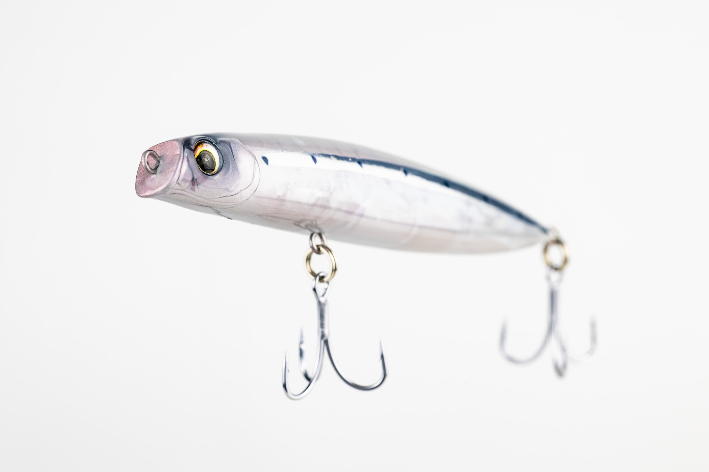
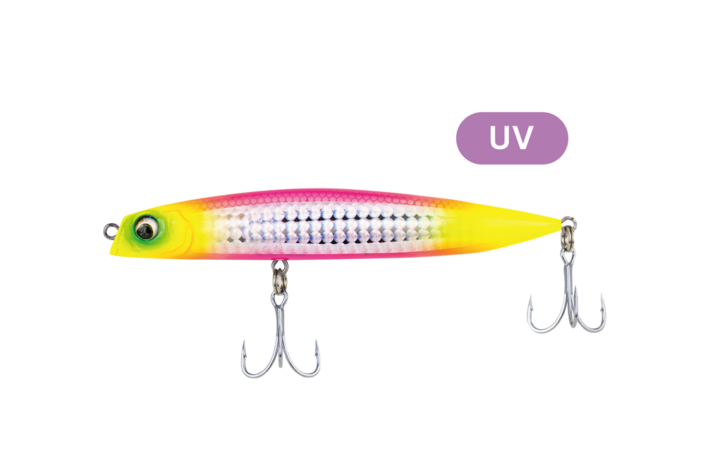
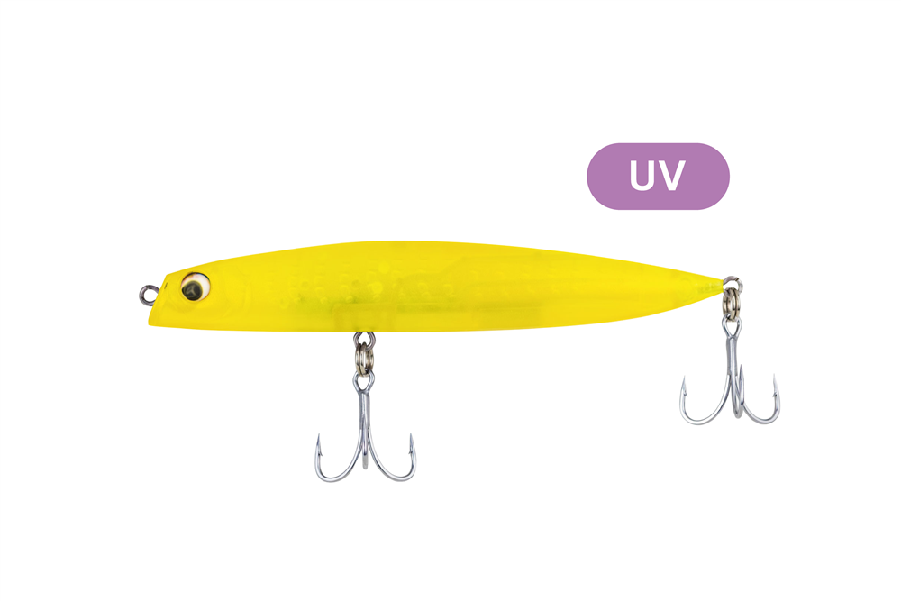
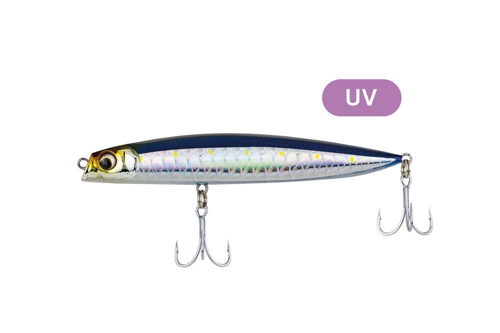
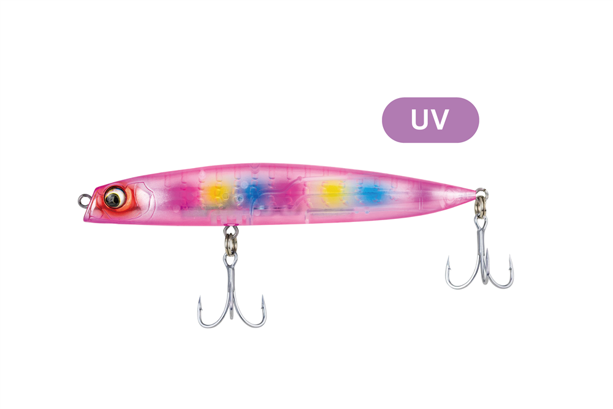
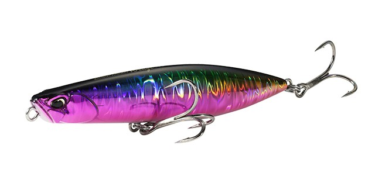

ラグラ115S
（LAGRA 115S）
ラグラ115S（LAGRA 115S）はADUSTA（アダスタ）のシンキングペンシルです。
届くだけでは終わらない。漂い、誘い、喰わせるシンキングペンシルです。
「低速で泳がない」「速く巻くと泳ぎが破綻する」「レンジキープが難しい」という、これまでのシンペンの弱点をすべて克服したモデル。ゼルファス133Fで培ったボディと重量バランスに高比重タングステンを組み合わせ、最大89mの飛距離と、デッドスローでもシャローを水平に泳ぐ浮遊感のある泳ぎを両立しています。

画像出典:ADUSTA公式HP
スペック
- メーカー
- ADUSTA（アダスタ）
- タイプ
- スローシンキング
- 全長
- 115mm
- 重量
- 27g
- 飛距離
- 最大89m（公式の実測）
- フック
- BKK Fangs 62-UA #4
- リング
- odz ハイパープレスリング #4
- カラー
- 全6色
- ターゲット
- シーバス・ヒラメ・ヒラスズキ・青物
- 価格
- 3,300円（税込）
- 発売
- 2026年10月31日
▼今すぐチェック
ラグラ115Sの特徴
よく飛ぶのに、デッドスローでシャローを泳ぐシンペン
-
最大89mの飛距離
高比重タングステンウェイトを3つ使い、ルアー中央に全質量の74%を集中。ゼルファスから受け継いだ空気抵抗の少ない流線形ボディで、ヘビーウェイトのシンペン並みに飛ぶ。
-
デッドスローでもシャローをキープ
水を噛んで素早く立ち上がる「グラヴィティヘッド」で、ゆっくり巻いても浅いレンジを水平姿勢のまま泳ぐ。浅瀬でスローな動きにしか反応しない魚を狙える。
-
巻く速さで変わる浮遊感のある泳ぎ
デッドスローでは漂うようなショートピッチスラローム、ミドルでは浮遊感のあるスウェイロール、ファストではロールの入ったダート。ラインスラックが出ていても泳ぎ続ける。
ラグラ115Sの使い方
基本はただ巻きです。デッドスローで浅いレンジを漂わせるように引くのが一番の持ち味で、反応が無ければ巻く速さを上げてスウェイロールやダートに変えていきます。
スローシンキングなので、リフト＆フォールで縦にゆっくり見せる、トゥイッチ＆ジャークでダートさせる、ボイルの時は水面まで上げてスキッピングさせるなど、ルアーを替えずに誘い方を変えられます。
ラグラ115Sの得意な状況
サーフ・河口・大規模河川など、広い場所でシーバスやヒラメを狙う時が得意です。
115mmのサイズは小さいベイトにも大きいベイトにも合わせやすく、浅いエリアを遠くまでゆっくり探りたい時に出番があります。
浅いエリアを遠くまでゆっくり探れるので、広い場所でシーバスやヒラメがよく釣れるのが強みです。
ワンポイント
公式の推奨タックルは、ML〜MHの9〜11ftのロッドにPE1〜1.5号・リーダー16〜30lb。感度とトリッキーな動きを重視するならショートリーダー、飛距離と安定した泳ぎを重視するならFNリーダーがおすすめされています。
オススメカラー
ラグラ115Sは全6色。そのうち4色を紹介します（画像は公式より）。

152 ドーンエッジマヅメのような高活性時や、澄み潮のデイゲームに効くアピールカラー。明滅効果が強く、ヒラメ・ヒラスズキ・青物にも。

193 ファントムチャートナイトゲームでいちばん目立ち、魚を寄せて食わせる力が強いカラー。ランカーシーバス狙いに。

194 ブルーシャドウ海・川を問わず一般的なベイトをイメージしたカラー。デイゲームでしっかりアピール。

230 フラミンゴキャンディデイゲームやクリアウォーターで活躍するカラー。
画像出典:ADUSTA公式HP
ラグラ115Sに似ているルアー
-
 ゼルファス133F
ADUSTA
詳細はこちら＞
ゼルファス133F
ADUSTA
詳細はこちら＞
ラグラの飛距離のもとになった、同じアダスタのフローティングミノー。
-
 フリッド125S
ブルーブルー
詳細はこちら＞
フリッド125S
ブルーブルー
詳細はこちら＞
後方重心で飛ぶ、サーフでも使えるシンキングペンシル。
-

ビーチウォーカー ウェッジ95S DUO 詳細はこちら＞サーフのヒラメ狙いで定番のシンキングペンシル。